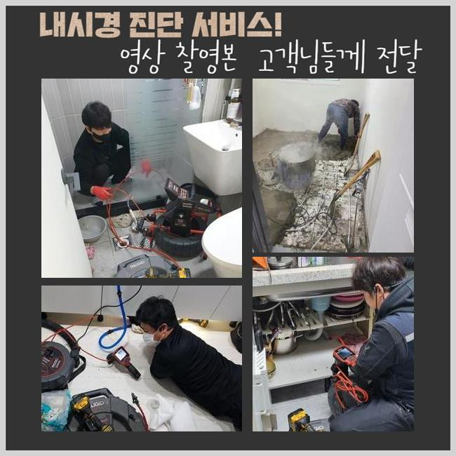
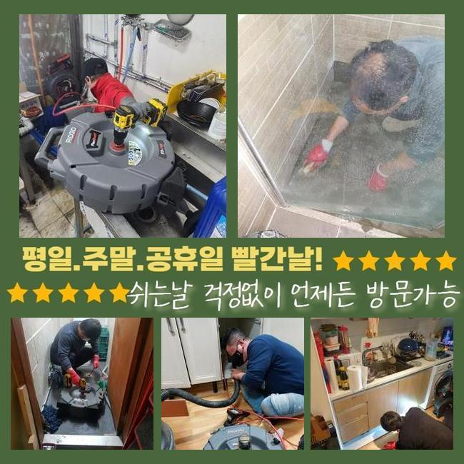
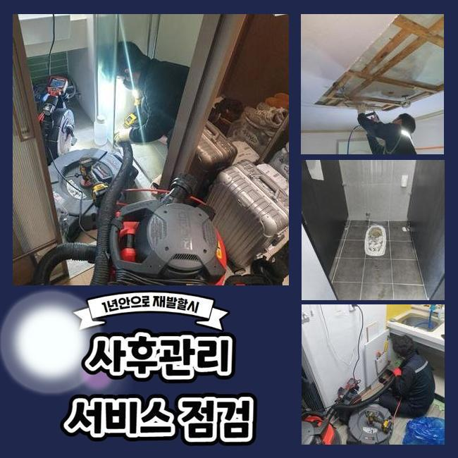
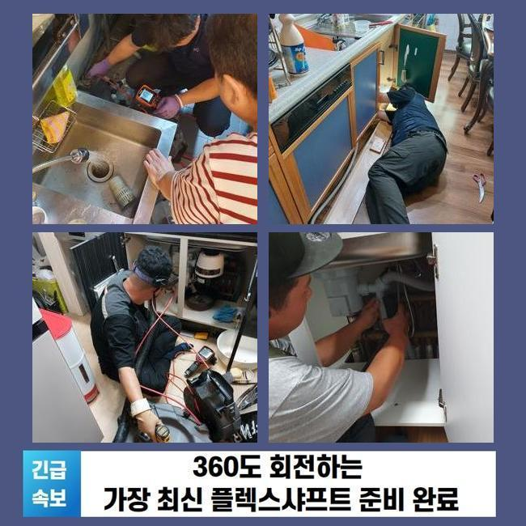
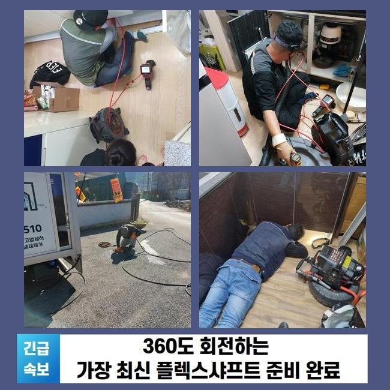
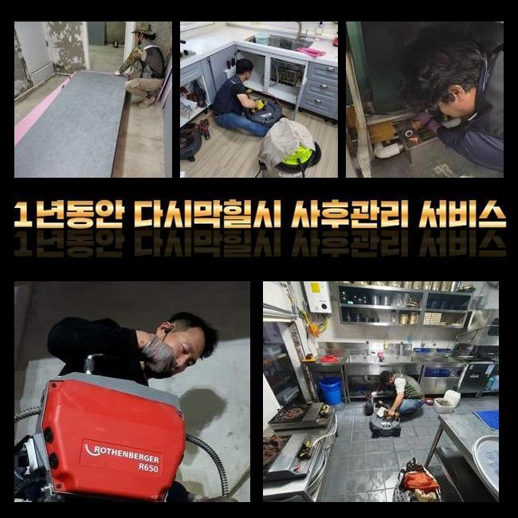

🏠 수원 호매실동씽크대뚫음 곡선동 하수구뚫어주는곳 배관설비공사
수원 싱크대막힘 전문 시공 후기

📋 작업 개요
- 위치: 수원
- 서비스 유형: 싱크대막힘, 변기막힘, 하수구막힘, 배관막힘, 집수정막힘, 역류해결, 뚫는업체, 배관청소, 설비공사
- 작업 일시: 2025. 3. 29. 20:54
- 업체명: 하수구수사대 (010-5615-2118)
🔍 문제 상황
수원 호매실동씽크대뚫음 곡선동 하수구뚫어주는곳 배관설비공사
다세대 주택 내부에 설치 되어있는 하수시설을 관리하지 않고 사용하시면 노폐물이 쌓여 배수구 막힘사고가 일어날 확률이 높아요
현재 사용하시는 하수설비의 연식이 많이 되었다면 주기적으로 배수구의 컨디션을 확인하시는 것을 추천합니다
이번에 출동한 현장은 의뢰인께서 배수구가 막힌건지 물이 내려가질 않는다고 전화주셨어요
긴급하게 출동을 해서 살펴보니 마을과는 떨어져서 외딴 지역의 다세대주택으로 주변에 캠핑시설이 위치해있는 상태로 보였습니다
건물을 올린지 오래되지도 않았지만 바깥에서 역류상황이 반복적으로 일어난다고 설명 해주셨습니다
살펴보니 창고 내부에 있는 집수정이 밖에 위치한 정화조로 유입되는 방식이였어요
정화조 거리가 너무 멀어서 창고 안에 설치를 해야했다고 하셨어요
의뢰인께 막힌부위를 찾아내도 중간부분에 점검구가 없는 경우라면 장시간 작업을 해야한다고 설명 해드렸더니 동의를 해주셨습니다
집수정쪽에서 내시경장치를 집어넣었으나 이물질들이 많아서 정화조쪽으로 라인이 들어가질 않았어요

🔎 원인 분석
💡 전문가 진단: 정밀 진단 장비를 사용하여 슬러지의 고착 여부를 판명하고 타격/세척 작업을 실시했습니다.
슬러지가 가득 차있는 모습을 고객님께도 보여드리면서 자세하게 말씀드렸어요
샤프트기기로 작업을 이어나갑니다
기기의 체인쪽에 머리카락과 물티슈가 계속적으로 걸려서 나왔습니다
보통 주택의 역류문제의 이유들은 물티슈와 머리카락등이 흔합니다
고객분께 모두 따로 폐기하시라고 안내 해드렸습니다
화학적 성분의 물티슈등은 종이재질이 아니라 플라스틱이므로 물에 녹지 않아요
최근 변기에 버려도 된다고 광고하는 물티슈도 있지만 한번에 많이 사용하시면 하수라인이 점차 막히면서 결국엔 역류하는 상황이 발생합니다
하수라인 안에 있던 침전물과 섞여 슬러지화 되면서 막힘사고를 유발합니다
사용자께서 머리카락 외 이물질들을 분리해서 배출하시기 바랍니다
배수관은 물만을 따로 처리하는 곳이라는걸 기억하여 불순물은 분리배출을 원칙으로 하시길 바랍니다

🔧 작업 과정
다음으로 창고쪽에서 내시경 작업을 이어갑니다
하수관이 매우 긴 경우라서 내시경기기계가 끝쪽까지 들어가는게 불가하여 쏜드기계를 활용했습니다
막힌 부분쪽에 계속해서 침전물 제거를 진행했어요
집수정과 동일하게 머리카락 외에도 물티슈가 계속 나오는 것을 보고 고객분께서도 심각함을 아시고 놀라셨습니다
저희 전문 기술진에게 이러한 문제현상이 일어나지 않게 할 수 있는 예방법을 알려달라고 하셔서 안내 해드렸어요
사용할때 소량의 이물질 정도는 일단 내려가면 녹거나 흘러갈거라고 많이들 생각하시지만 배관의 경사도에 따라서 안쪽으로 침전물이 형성되므로 작은 쓰레기나 음식에서 나오는 기름을 버리시면 안돼요
내시경장비를 재투입하여 오염물질이 깨끗하게 나왔는지 체크했어요
정화조에서 시작하여 집수정까지 모두 체크했고 찌꺼기 하나 없이 깔끔해진 하수관이 보였어요
고객분에게도 보여드렸더니 다행이라고 하셨습니다
보통 산성약품을 통해서 간단히 뚫을 수 있다고 생각하는 경우도 있지만 그건 매우 위험합니다
의뢰인께서 이용을 하시면서 이물질들을 따로 배출하며 주택의 연식이 오래 되신 경우엔 미리 전문진을 통하여 예방검진을 진행해보는게 좋아요
사소한 문제를 방치하시는 경우엔 막힘문제가 발생하여 대규모 공사까지 번지게 되면서 금액적인 부담이 커지게 돼요
어떤일도 마차가지로 하수관도 그냥 방치할수록 금액적인 고객님에세 부담되는 부분이 증가하다는걸 잊지말고 미리 예방하셔야 해요
작업이 종료된 후에도 현장 주변을 한번씩 확인하며 청소까지 완료했어요
오염물질로 인해서 부패된 냄새가 났으므로 특수세제로 청소하고 수전에 호수를 이어서 작업지 주변까지 모두 청소했어요
원래는 주변 장소까지 저희 전문 기술진이 특수청소하는 일은 많지 않았습니다


✅ 작업 완료
작업한 현장은 오염의 정도가 너무 심한 편이라서 저희도 그냥 마무리 지을 수가 없었습니다
저희 전문 기술진은 하수라인의 물티슈등은 물론이고 하수설비 내부의 불순물을 꺼내고 하수의 흐름 방향이 제대로 되는 것인지 최종점검을 꼭 진행해요
고객분께서 저희를 신뢰하여 의뢰를 주실 수 있게 최선을 다하며 이와 비슷한 경우로 자세하게 상담 받고자 하시다면 언제든 전화주세요
배수관 문제를 더 나은 방법들로 처리하고자 하신다면 신속정확함이 최선이라는 것을 잊지말고 미리 예방하셔야 해요
일상 생활 속에서 지금과 같은 하수시설의 문제점이 발생하지 않아야 하지만 발생했다면 최대한 빠르게 전문 기술진에게 연락하셔야 합니다




⚠️ 주방 싱크대 배관 막힘 예방 수칙
- ✅ 기름기가 묻은 식기나 프라이팬은 설거지 전 키친타올로 반드시 기름때를 닦아내세요.
- ✅ 주기적으로 싱크대 개수대에 뜨거운 물을 가득 받아 한 번에 내려 배관 내부 기름을 씻어내세요.
- ✅ 배수구 거름망을 미세한 필터로 사용하시고 음식물 찌꺼기가 틈으로 새어 들지 않게 관리하세요.
- ✅ 베이킹소다와 식초를 뜨거운 물과 함께 일주일에 한 번씩 부어주면 배관 살균과 막힘 예방에 좋습니다.
💡 핵심 정리
- 확실한 장비 작업(내시경 점검 및 샤프트 스케일링)으로 원인을 뿌리 뽑습니다.
- 작업 후 1년 이내에 동일한 부위 재발 시 100% 무상 A/S 서비스를 보장합니다.
- 서울 · 경기 · 인천 전 지역에 24시간 언제든 긴급 출동할 수 있도록 항시 대기 중입니다.
❓ 자주 묻는 질문 (FAQ)
🚨 수원 싱크대막힘 문제로 고민이신가요?
정확한 원인 진단과 확실한 시공으로 재발 없는 해결을 약속드립니다.
24시간 긴급 출동 | 서울 · 경기 · 인천 전지역 | 1년 내 재발 시 무상 A/S